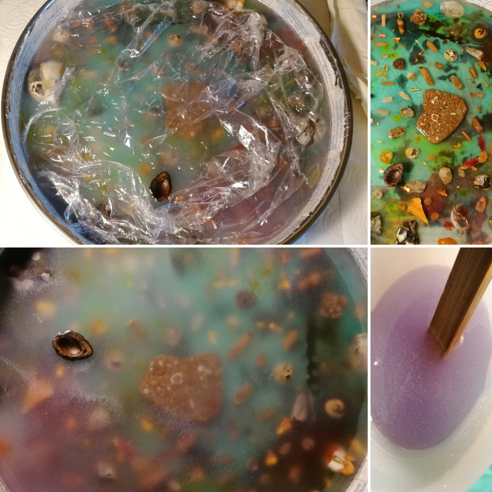

Vom Ritual der Wünsche, dem Vater des Wunschprojektes
Ein kunsttherapeutisches Projekt
Ich finde, es ist für mich ein schönes Ritual, mir zum Ende des Jahres bewusst zu machen, dass ich selbst viel geschafft habe in diesem besagten Jahr und dass viel Positives geschehen ist. Und falls doch mal mehr Negatives eine Rolle gespielt haben sollte, dass ich in diesen Dingen immer auch Chancen sehen kann. Chancen auf Veränderungen, Neuerungen, Weiterentwicklungen. Chancen auf Loslassen, auf Abschied und Neubeginn. Es kommt halt immer auf die Brille der Sichtweisen an.
Sich bewusst zu machen, dass in der End- und Zwischen-den-Jahren-Zeit die Welt zwischen den Welten dünner wird, also die Grenzwelt, die Barrieren, und dass man viel mehr als vorher spüren kann, wie man dort wandeln kann und Energien spüren kann, die man sonst vielleicht im alltäglichen Alltag nur schwer zu fassen und zu benennen bekommt. Ich glaube, dass ist mir dabei ganz wichtig. Also, dass ich mich ganz bewusst darauf einlasse, und auch nicht damit innerlich hadere, dass ich Wünsche ans Universum? Wünsche an Gott? oder vielmehr Wünsche an mich selbst formulieren darf und diese dann in meine ganz persönliche Ritualfindung mit einbinden darf.
Ich gebe zu, ich richtete meine (im Zeitraum 21/22 durch Unaufmerksamkeit meinerseits leider mehr als) 13 Wünsche lieber an mich selbst als an eine übergeordnete Macht. Denn ich habe mein Heft (egal ob dass des Schwertes oder das des Schreibens) lieber selbst in der Hand, als mich etwas anzuvertrauen, was ich letzten Endes sowieso nicht rational verstehen kann.
Ich tue mich sehr schwer damit, mich in der Hoffnung zu wiegen, dass etwas Übergeordnetes mein Leben richten wird, mich führen und mir helfen wird. Bei menschlichen Wesen ist das schon etwas anderes, wobei auch diese nicht meine Heiländer im übertragenen Sinne sind, sondern vielmehr Lebewesen auf Augenhöhe, die ihr eigenes Leben führen und nicht das meine lenken. Soll heißen: Ich bin für mich selbst verantwortlich, für mein eigenes Glück und brauche dafür keine anderen Menschen.
Aber dieses Formulieren von Wünschen hatte für mich schon auch den flüchtigen Anhauch eines „Mach mal für mich“ oder „Ich kann das nicht allein“? Zumindest kam mir das vor Weihnachten in den Sinn, als ich mich da mental hineinbegeben habe. Aber genau das will ich nicht mehr. Denn ich bin mein eigener Macher. Ich kann bestimmen, wo ich im Leben hingehen kann.
Dennoch war es für mich eine der intensivsten Erfahrungen seit langem. Nun gut, ich habe in diesem Prozess ja auch eine gewisse Art „Versöhnungsritual“ mit einfließen lassen. Also während der Arbeit an meinem Tablett der Wünsche und der damit einhergehenden Wunschkraniche. Das war sehr energieintensiv, aber gut, wichtig für mich, für dieses neue Jahr 2022. Wichtig für diese herausfordernde Zeit mit dem bösen Virus C und seinen Folgen …
Also, pack mer‘s a. Und dabei nie das handbreite Wasser unterm Kiel vergessen. );^°

| Titel: | Vom Ritual der Wünsche, dem Vater des Wunschprojektes |
|---|---|
| Entstehung: | LE / BS, Dezember 2021, Januar 2022 |
| Hintergrund: | Ausschnitte aus meinem Tagebuch über mein Ritual der Wünsche (Dezember 2012 / Januar 2022). |
| verschiedene Youtubevideos und ihre Texte: | Das Rauhnächteritual Teil I: ZelebrierenSteine können zu einer Last werden, wenn wir sie jahrzehntelang in unseren Schatzkammern der Daseinsbleibe horten, ohne sie auch nur eines Blickes zu würdigen. Selbst die kleinsten Kiesel können dabei enorm viel Energie anstauen und bunkern und plötzlich, wenn wir sie schließlich doch in einer schwachen Minute eines oder gar mehrere Blicke würdigen, weil wir uns wieder an sie erinnern und sie uns wieder geläufiger werden, zu einem Lichtmeer aus lauter versteinerten Glühwürmchen anschwellen, die nach unserer Gunst lechzen, um auch ja unsere Beachtung im Kreisschluss der Zeit aus den Dreizehn Wünschen eines Jahres geschenkt zu bekommen. Jeder dieser Kieselsteine ist eine meiner vielen Begehren, die ich mit den Jahrzehnten nie geäußert, dafür allerdings vehement zerträumt habe, bis sie nur noch ausgekaute Kaugummis waren, die nach alt muffigem Scheuerlappen schmeckten, zwischen den Zähnen immer mehr wurden und ich sie mir dann enttäuscht vor die Füße gespuckt habe. © CRK, Le, 01/2022 Das Rauhnächteritual Teil II: Das Rauhnächteritual Teil III: Das WunschtablettIch wünsche mir ein Tablett, dass mir meine Wünsche erfüllt? Ala ein Geist der Lampe, der in diesem Falle in einem Tablett wohnt? Eben meinem Wunschtablett? Logisch ist es das Letztere, was mich zu diesem sehr energetischen Projekt bewegt hat, dass ich, geleitet von meiner Intuition, während der Zeit der Rauhnächte im Übergang vom Jahr 2021 hin zum neuen Jahr 2022 angesiedelt habe, um eben endlich für mich ein Ritual zu finden, dass mich darin bestärkt, was ich im letzten Jahr alles Gutes erfahren und für mich gelernt habe. In dieses Ritual mit hineingeflossen sind: Eine Collage aus verschiedenen Papieren als Hintergrund, als Grundierung des Innenlebens des ansonsten edelstahlhaltigen Tabletts mit glänzender Oberfläche. Es sind verschiedene, mir wichtige Zitate und Sprüche aus meinem letztjährigen Aufmerksamkeitskalender, eine wunderschöne Landschaftsaufnahme aus einem alten Fotokalender, das Foto lauter umhäkelter Bäume im Herbst, die Teile einer Wichtel-Weihnachtsserviette und noch viel Tapetenkleister als symbolischer Meeressand verwendet worden. Spätestens ab diesem Schritt spürte ich sehr, sehr deutlich, wie energiegeladen dieses Projekt doch ist und wie es mich anstrengt und fordert. Meine Intuition leitete mich und ließ mich weitere Versteinerungen aus meinen Tagen als Kind aus der Sammlung heraussuchen und sie wie ein lichtes Mosaik oder auch Puzzle auf das inzwischen verhärtete Harz platzieren, und es erfolgte eine weitere Gussschicht aus Epoxidharz. Dieses Mal mit einem Touch an Weiß. Wünsche, die nie gelebt wurden, können einen irgendwann zur Last werden. Man kann sie aber auch ganz anders betrachten. Nämlich als die goldenen Flocken dessen, was man Chancen nennt, für die Dinge, die wir in der Hand haben, um sie zu ändern. Der für mich bis jetzt, vom noch nicht ganz abgeschlossenen Projekt, schwierigste Schritt, war allerdings einige meiner alten Metallplättchen und Schräubchen, die ich während der bimaxillären Kieferumstellung vor über 10 Jahren eingesetzt bekommen hatte, mit in das Wunschtablett hineinzuzugeben. Aus bedeutungsschwangeren Gründen ließ mich meine Intuition dieses tun. Das ist der bisherige Stand der Dinge. Jetzt wird das Harz das ganze Wochenende aushärten bevor die letzten beiden Gießschichten erfolgen werden. Bis dahin erst einmal … Das Rauhnächteritual Teil IV: Das Rauhnächteritual Teil V: Das Rauhnächteritual Teil VI: Das Rauhnächteritual Teil VII: Zum Anlass dessenoder auch Ein Brief an das Kind in mir und vielleicht auch in dirMondbeschienen sitzen wir nebeneinander. Du in deinem Zug und ich in meinem. Und wir legen die Hände aneinander, auch wenn zwischen uns ein Bahnsteig voller Wollenwünsche und Könnennichtwollen oder gar Möchtennichtdürfen vielleicht auch Sollenmüssen liegt, fahren wir ein Stück des Weges gemeinsam. Obwohl wir nicht wissen können, was der Wunsch des Vaters unserer Gedanken mit uns alles machen kann oder vielmehr tun wird, wenn wir nicht treu auf unseren Herzschlag hören. Jeder für sich. Jeder in seinem eigenen Zug, wenn er Zug um Zug der ichgeweihten Zielgeraten entgegenfährt, nur um allzu bald festzustellen, dass es nicht die letzte Gerade unserer Zielgenauigkeit oder vielmehr Ungenauigkeit der Lebensziele gewesen sein wird. Spürst du meine Hand? Die Rauheit der Innenfläche? Das Zerfurchte meiner Haut, der Gang durch Täler und über Höhen und durch den Spiegel meiner Seele? Genauso ist mein bisheriges Leben verlaufen, und niemand wird mir sagen, ob es richtig oder falsch gewesen ist. Oder vielmehr lasse ich es mir nicht sagen. Denn niemand ist der Stellvertreter in meinen Schuhen. Niemand passt in meine Seele hinein. Und niemand trägt meine Haut zu Markte, ohne dass ich Ja und Amen dazu sage. Und genau das ist mir fremd geworden. Dieser Wunsch nach demjenigen Menschen, der auf jede meiner Fragen eine Antwort weiß und der mir mein Leben abnimmt, dem ich gefallen möchte, weil ich Angst habe, dass er mich sonst wieder verlässt und dem ich, ihm zuliebe, Dinge tue, weil ich glaube, dass sie ihm gefallen könnten, dass er sie möchte. Ich brauche keinen Weltenerklärer mehr. Ich brauche nur mich selbst, um glücklich zu sein. Aber es ist schön, dass es dich dennoch gibt. Auch wenn du in Zukunft wieder allein auf meiner grünen Besuchercouch sitzen wirst, so bist du jedoch nie allein. Jedenfalls in meinem Herzen nicht. Ich kann dir nicht versprechen, für immer zu können, für immer da zu sein, für immer zu wollen. Vielleicht stelle ich später doch noch fest, dass mir ein Kompliziertsein lieber gewesen wäre, als mit dir neue Pfade zu beschreiten? Vielleicht sehne ich mich in naher Zukunft doch noch nach einem Drama ohne Ende, einfach aus Gewohnheit, weil es schon immer so gewesen ist in meinen Zugeneigtheiten zu anderen Mitmenschen? Vielleicht. Doch jetzt ist es gut so wie es ist. Jetzt freue ich mich darüber, die vertrauten Gewohnheiten verlassen zu haben. Denn im Sekunden- und auch Minutenblick sehne ich mich keineswegs nach dem Sehnen zurück, sondern genüge ganz allein mir selbst. © CRK, LE, 01/2022 Das Rauhnächteritual Teil VIII: Vom NordenIch stehe am Bug, nahe der Galionsfigur, der Sirene, meiner kleinen Nussschale, und sehe den Jonas steuerbords, in der Nähe des Hecks, nicht mehr. Er ist im Bauch eines Wales abgetaucht und wird wohl nie wieder das Licht dieser, meiner, Welt erblicken? Niemand weiß mehr, was sich dort unten über die Jahrzehnte angesammelt hat. Selbst ich nicht. Ich am allerwenigsten. Denn ich bin der schöpfende Macher dieses ganzen gewesenen Geweses der letzten Jahrzehnte und habe darüber während des Rituals der dreizehn Wünsche die Nordung verloren. Ich kann weder den Norden noch den Süden oder gar den Osten oder den Westen anpeilen, weil ich einfach momentan so gar keine Ahnung darüber habe, wie man etwas peilt. Ich stehe am Backbord meines kleinen Kahns und sehe Jonas an der Steuerbordseite nicht mehr. Und ich wünsche mir, dass die Wünsche im Bodensatz meines Mehr-Meeres klarer werden und mir erzählen, was das verwunschene Wunschmeer für mich parat hält. Doch da sind nur die Kraniche, die wie aufgeweichte Zeitungen mit verlaufenen Klatschspalten ausschauen und auf den Schaumkronen der Wellenkämme meines rauen Mehr-Meeres hin- und hergeworfen werden, weil das Steuerruder meiner Nussschale ins Wasser gefallen ist. © CRK, Le, 01/2022 Das Rauhnächteritual Teil IX: Ein Ge-Danke-n zur NachtSchon seit Stunden sitze ich hier und lausche dem Atmen der Großstadt bei Nacht. Ich kann nicht schlafen. Der Geschirrspüler läuft, und die Waschmaschine pumpt Wasser ab. Aus dem Nachbarhaus, schräg gegenüber, auf der anderen Straßenseite, erklingt Klaviermusik. Eins der Fenster ist angeklappt, und in deren Gaube steht noch immer ein Schwibbogen, der den Raum dahinter mit seinen Teelichtern schummrig erleuchtet. Barfuß laufe ich durch die kerzenbeschienene Wohnung. Das Laminat knarrt immer an ganz bestimmten Stellen, wenn ich darüber hinweggehe und nicht stehen bleibe, um mich in meiner Sache zu vertiefen. Und ich denke über das Mysterium des Lebens nach. Nämlich heute hier zu stehen, an diesem Wohnzimmerfenster und den leuchtenden Schwibbogen, in der Gaube, auf der anderen Straßenseite, zu betrachten, ist für mich nicht so selbstverständlich, wie es vielleicht sein könnte, wenn dieses, jenes oder Sell nicht gewesen wäre.
Ergo ist es auch ein kleines Wunder. Heute denke ich noch nicht über Grabsteine nach. Heute gestalte ich mir meine kleinen Wunder selbst und sehe sie wachen Auges in meiner Umgebung. Heute lache ich mein Leben und die Menschen darin an, nicht aus und male mir meine Welt, auch die Ungeheuer darin, bunt an. Heute bin ich mein Macher und schiebe nicht andere Leute vors Loch. Heute nehme ich dich an die Hand und gehe ein Stück des Weges mit dir. Ich glaube an dich und an mich, aber nicht an den Wunderheiler von nebenan. © CRK, LE, 01/2022 |